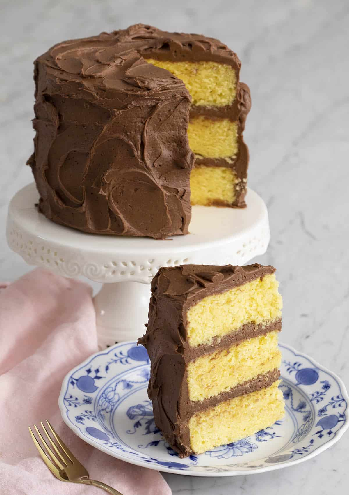

Yellow Cake

Description
This delicious yellow cake recipe makes a great cake for any occasion. This recipe includes a rich and creamy frosting that perfectly balances the vanilla flavor of the cake.
Ingredients
- Vegetable oil
- Semi-sweet chocolate
- Butter milk
- Salt
- Flour
- Powdered sugar
- Butter
- Eggs
- Vanilla extract
- Sugar
- Corn starch
- Milk
- Baking powder
- Cocoa powder